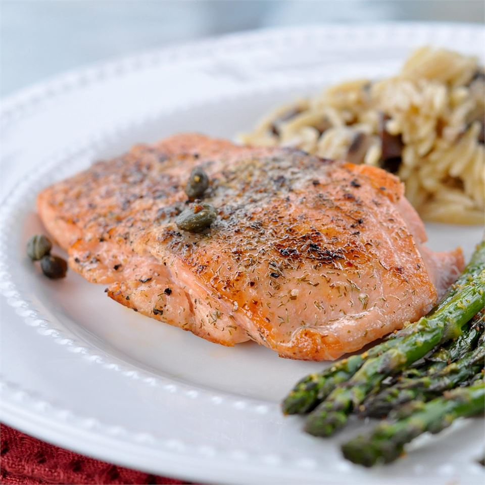

Pan-Seared Salmon

About this recipe
Learn how long to cook salmon on the stove with this easy pan-seared salmon recipe.
The salmon fillets are simply seasoned with salt, pepper, and capers. Garnish with slices of lemon.
Ingredients
- 4 6 oz. fillets of salmon
- 2 Tbsp. olive oil
- 2 Tbsp. capers
- 1/8 tsp. salt
- 1/8 tsp. ground black pepper
- 4 slices lemon
Steps
- Preheat a large heavy skillet over medium heat for 3 minutes.
- Coat salmon with olive oil; place skin side down in the preheated skillet and increase heat to high.
Sprinkle with capers, salt, and pepper; cook for three minutes on one side. Turn salmon fillets over;
continue to cook until salmon flakes easily with a fork, about 5 minutes.
- Transfer salmon to individual plates and garnish with lemon slices.